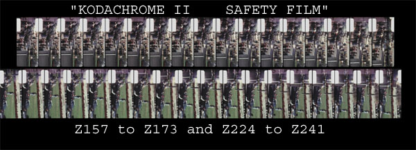

|
|
|
|
| 1 to 154 |
|
1 to 154 |
| 155 (misnumbered)* |
|
157 (correct)* |
| 156 to 157 |
|
155 to 156 |
| 158 to 207 |
|
158 to 207 |
| 208 to 211 |
|
208 to 211 |
| 212* to 330 |
|
212* to 330 |
| 331 (correct) |
|
332 (out of sequence) |
| 332 (correct) |
|
331 (out of sequence) |
| 333 to 340 |
|
333 to 340 |
| 341 (correct) | Missing | |
| 342 to 349 |
|
341 to 348 |
| 350 (correct) | Missing | |
| 351 to 485 |
|
349 to 483 |
| 486 (not numbered) | Missing |
* Note 1: Frame 157 is a splice. The top 1/3 is frame
155 and the bottom 2/3 is frame 157.
*Note 2: Frame 212 is a splice also. The top portion
is frame 208 and the bottom portion is 212.
There are a Total of 9 frames missing from "Image of an Assassination, A New Look at the Zapruder Film". There are only 6 frames missing from the "JFK Assassination, A Visual Investigation" versision of the film.
As I watched my copy of the MPI version on DVD, I noticed some white letters kept flashing on the left of the film in the sprocket hole area at regular intervals. Upon closer examination I found that the letters spelled out "KODACHROME II" and "SAFETY FILM". There are also a couple of numbers and symbols between these two phrases which have no meaning to me.

I decided to find out if this message was at a regular interval such that I could determine if any additional frames were missing. The entire message "KODACHROME II ... SAFETY FILM" is between 17 and 18 frames long. The message is flashed 7 times through the Zapruder film. The message can be seen from frames 25 to 41, 92 to 109, 157 to 173, 224 to 241, 288 to 305, 354 to 370 and 418 to 435. The start of the message does not begin exactly in the same place each time in relation to the sprocket holes.
My next step was to measure the distance between
each repeating message. After adding in frame 341 & 350 and assuming
that 155, 156 & 208 to 211 were the only missing frames, I measured
the partial distance that the message took up at the beginning and ending
of the phrase. The distance between the 1st & 2nd is 50 5/8 frames;
2nd & 3rd is 48; 3rd & 4th is 50 5/8; 4th & 5th is 47 7/8;
5th & 6th is 50 5/8; and the 6th & 7th is 48. I believe these
measurements are close enough to show a pattern: 51; 48; 51; 48; 51;
48. If any 1 or more frames are either added or subtracted then
the whole pattern is thrown off. I believe this pattern proves the
Zapruder film is "authentic" in that there are only 9
frames missing!